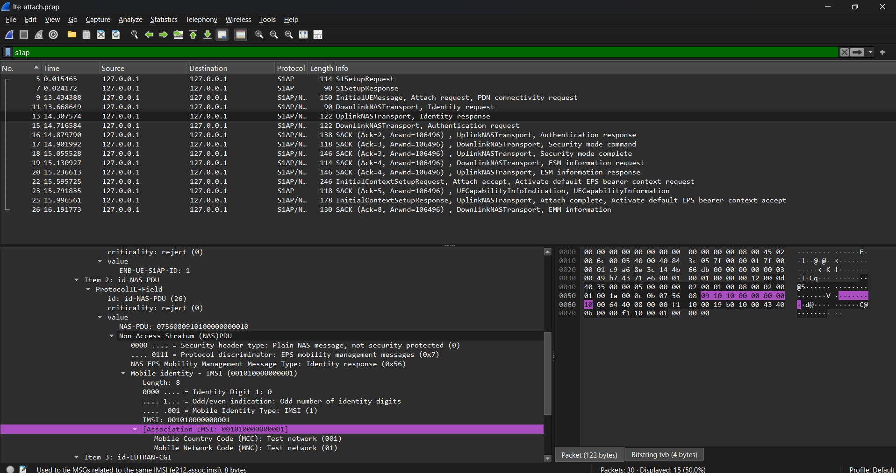
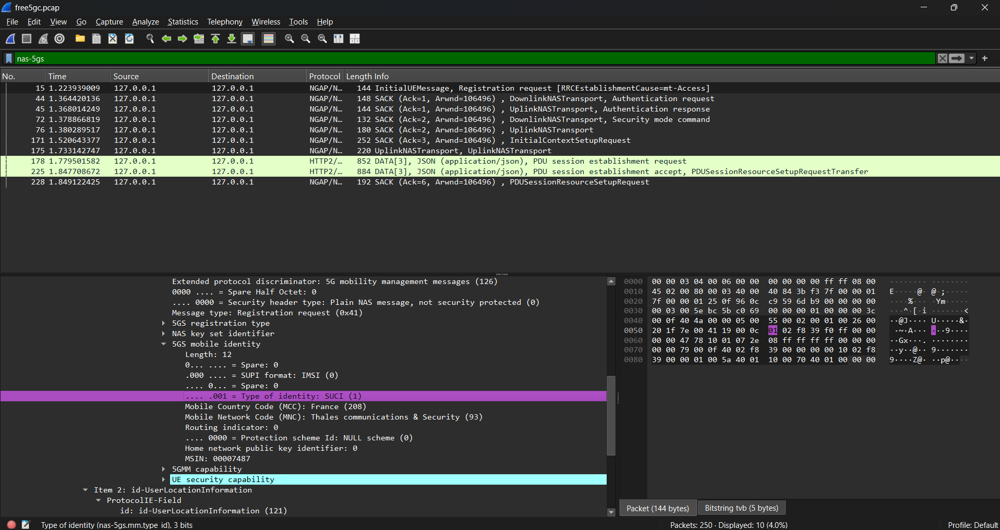
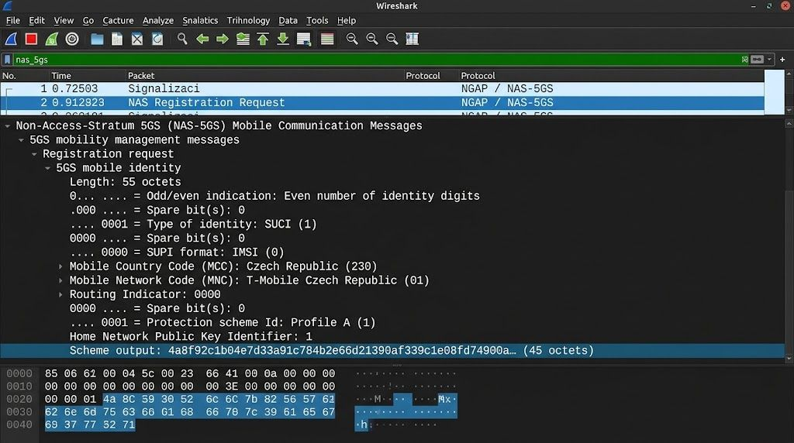
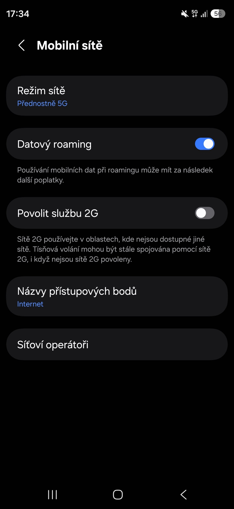

Security in 4G and 5G Mobile Networks
Semestrální projekt do předmětu Základy bezpečnosti v komunikacích (ZBK)
Introduction
Mobilní sítě jsou kritickou infrastrukturou moderní společnosti. Od 4G generace přešly sítě na tzv. All-IP architekturu. Veškerý provoz, včetně hlasu (VoLTE), je přenášen formou IP paketů. Ačkoliv to přineslo obrovské zrychlení a úsporu hardwarových nákladů, telekomunikační sítě zdědily zranitelnosti počítačových sítí. Tento projekt detailně mapuje kryptografické nedostatky 4G sítí, které vedly k útokům na druhé (linkové) vrstvě, a analyzuje, jak 5G tyto problémy řeší pomocí asymetrické kryptografie a zabezpečení aplikačních rozhraní.
01 Current State of the Art: Architektura a mechanismy
4G EPS (Evolved Packet System)
- Autentizace (EPS-AKA): Zajišťuje vzájemné ověření, symetrický klíč je pevně uložen na SIM a v databázi jádra (HSS).
- Identita: Používá IMSI (International Mobile Subscriber Identity). Slabinou je, že se v inicializační fázi vysílá vzduchem nezašifrovaně.
- Kritická slabina (Integrita): Šifrují se řídicí i uživatelská data, avšak integrita dat (ochrana proti modifikaci) je počítána pouze pro signalizaci, uživatelská data podepsána nejsou.
5G SBA (Service-Based Architecture)
- Ochrana identity (SUCI): Permanentní identita (SUPI) už nikdy vzduchem neletí v čistém textu. SIM karta obsahuje veřejný klíč operátora a pomocí ECIES kryptografie vygeneruje šifrovaný hash SUCI.
- Zajištění integrity (UPIP): Zaveden mechanismus User Plane Integrity Protection zamezující změně obsahu dat.
- Cloud jádro: Síťové prvky jsou mikroslužby komunikující přes HTTP/2 REST API zabezpečené pomocí mTLS a OAuth 2.0.
02 Detailní rozbor útoků a analýza komplexity
| Název útoku | Cílená síť | Technický princip (Vektor) | Komplexita |
|---|---|---|---|
| aLTEr Attack | 4G LTE | Využívá chybějící kontrolu integrity datové roviny a vlastnost proudové šifry AES-CTR (malleability). Útočník provede operaci XOR nad zašifrovaným paketem a modifikuje cílovou IP adresu. | Vysoká (SDR + MitM relé) |
| IMSI-Catching (Stingray) | 4G / 2G | Emulace falešné eNodeB stanice. Cílem je donutit zařízení odeslat zprávu vyžadující identitu, na kterou LTE reaguje odesláním IMSI v čistém textu. | Nízká (HackRF/USRP) |
| Bidding-Down (Downgrade) | 5G -> 4G/2G | Cílené rádiové rušení (jamming) 5G frekvencí nebo podvržení signalizace nutící mobil přejít do méně zabezpečených sítí. | Střední (RF Jammer) |
| SBA API Injection | 5G Core SA | Exploitace jádra 5G. Chybějící mTLS nebo nesprávná konfigurace v servisně orientované architektuře umožňuje neautorizované volání mikroslužeb. | Střední (HTTP/2, REST) |
03 Vlastní názor a praktický přínos projektu
Analýza komunikace (Wireshark)
Srovnání registrace v 4G a 5G sítích na úrovni Non-Access-Stratum (NAS) vrstvy. Screenshoty demonstrují odchycení nezabezpečeného IMSI a ověření fungování SUCI šifrování.
Zpráva Identity response odhaluje permanentní identitu SIM karty bez šifrování.

Zpráva Registration request využívá strukturu SUCI pro ochranu permanentní identity (SUPI).

Ukázka produkčního nasazení s aktivním schématem Profile A (1). Místo čitelného MSIN je v poli Scheme output přenášen asymetricky zašifrovaný řetězec (45 oktetů).

Hardwarová mitigace (Samsung)
Reálná ochrana koncového zařízení proti útokům založeným na vnucování slabších sítí.
Blokování 2G sítí na úrovni modemu
Deaktivací podpory 2G v nastavení One UI je efektivně eliminován hlavní vektor pro IMSI catchery (Stingrays), které se uživatele snaží stáhnout do nezabezpečené GSM sítě bez vzájemné autentizace.

Conclusion & Vlastní názor
Z kryptografického i systémového hlediska je 5G obrovským krokem vpřed. 3GPP adresovalo největší zranitelnosti LTE – implementací ECIES pro SUCI zabránilo sledování identity a přidáním UPIP znehodnotilo manipulační útoky jako aLTEr.
Můj osobní názor je, že zavedením SBA se přesunulo těžiště bezpečnosti. Jádro 5G je standardní cloudovou aplikací využívající HTTP/2 a JSON. Hlavní hrozby tak nebudou pocházet z modifikace rádiových vln, ale ze zranitelností cloud-native prostředí, chybné konfigurace mTLS či chyb v API rozhraní.
Zdroje
- 3GPP TS 33.401: Security architecture for the Evolved Packet System (EPS).
- 3GPP TS 33.501: Security architecture and procedures for 5G system.
- RUPPRECHT, David, et al. Breaking LTE on layer two. IEEE Symposium on Security and Privacy (SP), 2019.
- Zadání semestrálního projektu: Základy bezpečnosti v komunikacích, VŠB-TUO.